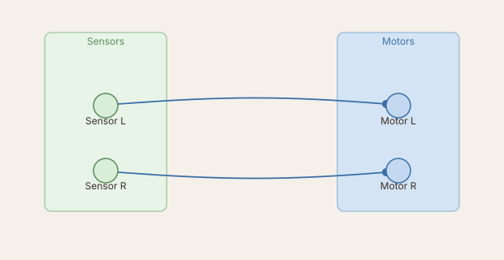
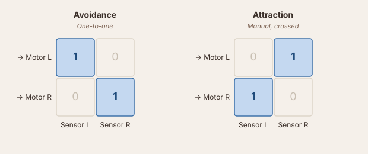
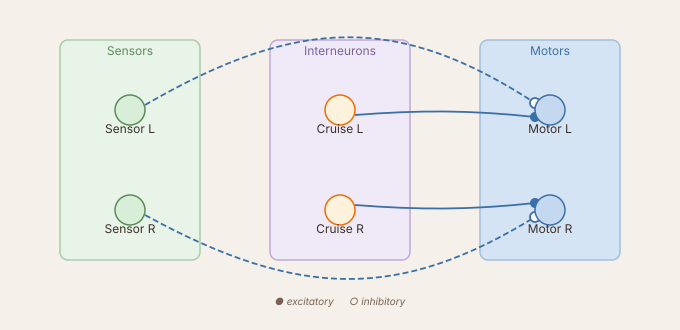
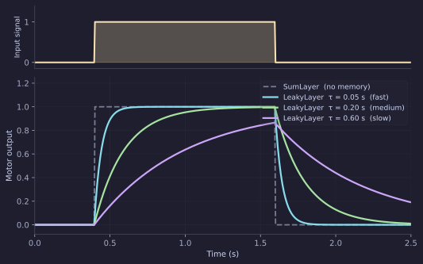

Wiring Brains
In Coding Brains you built a Braitenberg vehicle by writing the sensor-to-motor mapping directly in loop(). That works perfectly, but there is a cost: the connection strengths are constants baked into your code. Changing them means editing, saving, and reloading the file.
This tutorial builds those vehicles — plus a third — entirely through the Network visualizer's graphical editor. No Python file, no loop(). Every connection is a weight matrix you draw and type into, and every edit takes effect immediately.
Getting started
In the Brain tab, switch the group to Network mode (instead of Code brain). The group then runs a circuit loaded from a saved file instead of code — internally the BrainGUI module, a DataBrain, which no longer appears in the code-brain list.
Click + beside Network and give it a name, then ⬡ Open visualizer. This creates an empty circuit that already contains one node: motor, a MotorLayer with two outputs (left wheel, right wheel). Everything else below happens inside the visualizer.
The circuit
Same robot as Coding Brains: two light sensors, two wheel motors.

A sensor node feeding the motor node is the whole circuit — no summing layer needed in between. The pattern above (each sensor to its own-side motor) is the avoidance wiring you'll build next; crossing the connections instead gives attraction, covered further down.
Adding the sensor
Open the Network visualizer — the palette of sensor and layer chips is on its left edge. Drag GradientSensor onto the canvas, to the left of motor. A dialog opens to name and configure it: set name to light and leave n=2 (one ray per side). Confirm to drop the node.
Wiring it — avoidance
Click motor to select it, then drag from light onto motor. The weight-matrix editor opens the instant the connection is created — the same dialog you get later by right-clicking any existing connection and choosing Edit weight….
The dialog labels its own axes: rows are motor neurons (target), columns are light neurons (source), + excitatory / − inhibitory. Pick the One-to-one pattern and leave its default amplitude of 1 — sensor 0 (left) now drives motor 0 (left) with weight 1, sensor 1 (right) drives motor 1 (right) the same way, and every other cell is zero.
light's raw reading only ranges over [0, 1], nowhere near the [-100, 100] range the robot expects. Rather than inflating the weight, scale the source: right-click light → Properties… and set scale to 60. The sensor now reports up to 60, the weight stays a clean 1, and the motor gets the real command directly — no separate speed slider, no code.
Or scale the connection instead
Scaling at the source isn't required — you could just as well leave light's scale at 1 and set the connection's weight to 60 instead. The two are mathematically identical (1 × 60 = 60 × 1); scaling the sensor just keeps every downstream weight matrix in this tutorial a clean ±1.
Run it: when light is on the left, the left motor speeds up and the robot steers right, away from the source. This is Vehicle 2a, avoidance.
Attraction — cross the connection
Right-click the connection between light and motor → Edit weight…, switch the pattern to Manual, and swap the two nonzero cells: 1 in row 0 / column 1 and row 1 / column 0 instead, diagonal left at zero. Now the left sensor drives the right motor.

| Pattern | Meaning |
|---|---|
| One-to-one (diagonal) | Sensor L → Motor L, Sensor R → Motor R. Avoidance. |
| Manual, crossed | Sensor L → Motor R, Sensor R → Motor L. Attraction. |
One dialog, two cells swapped — completely opposite behaviour.
Vehicle 3 — cruising with inhibition
Braitenberg's Vehicle 3 keeps the same body but changes two things: the sensor connection is inhibitory (a negative weight) instead of excitatory, and a ConstantLayer gives both motors a constant baseline drive so the robot cruises forward even with no stimulus at all.

Start another new network for this one. Drag a GradientSensor onto the canvas (name='light', n=2, scale=30) and a ConstantLayer next to it, named cruise (n=2, value=30) — ConstantLayer has no separate scale factor, so value is the number that reaches the motor. Then wire both into motor:
cruise → motor, One-to-one, default amplitude1— a steady forward baseline of30on both wheels.light → motor, One-to-one, amplitude−1— same-side, but inhibitory this time.
With the light on the left, the left sensor rises and subtracts from the left motor while the right motor holds at the cruise baseline — the relatively faster right motor turns the robot toward the light, decelerating as it gets closer (at full sensor strength the two cancel exactly: 30 − 30 = 0, which is why light's scale was set to match cruise's value). Braitenberg called this behaviour love: the vehicle approaches and settles near the source instead of colliding with it.
Cross the inhibitory connection the same way you did for attraction (Manual, −1 in the off-diagonal cells) and the turn flips sign: the robot steers away from the light while still cruising forward, rather than the instantaneous swerve of the plain avoidance circuit.
Adding memory — the LeakyLayer
A MotorLayer passes its input through instantaneously. The motor jumps to full speed the moment the sensor fires, and drops to zero the moment the source moves away. Real muscles — and real motor controllers — don't work like that.
A LeakyLayer is a first-order low-pass filter. Its output approaches the input with time constant tau_rise and decays with tau_decay:

Larger tau → slower, smoother response. The motor no longer chatters when the robot skims the edge of a patch.
Back in the avoidance/attraction network, right-click the light → motor connection → Remove. Drag a LeakyLayer chip onto the canvas between them, name it smooth, and leave n=2. Rewire the circuit:
light → smooth, One-to-one, default amplitude1.smooth → motor, Manual,1in the crossed cells (attraction, this time filtered).
light's scale is still 60 from before, so it carries straight through — every weight here can stay a clean ±1.
Right-click smooth → Properties… to set tau_rise and tau_decay — try 0.15 for both. tau_rise/tau_decay are in seconds, applied at the simulation's dt (default 10 ms): tau = 0.15 means the output reaches ~63% of a step input after 0.15 s, about fifteen simulation ticks. Change either value while the brain is running and the response speed changes immediately.
What to try next
- Drag a second
LeakyLayerbetweensmoothandmotor, set its activation toreluin Properties…, and observe how the threshold changes the robot's sensitivity near the edge of a patch. - Drag an
AdaptiveLayerchip (w > 0,n=2) — it oscillates autonomously (half-centre oscillator). Wire a light sensor into it and watch the oscillation frequency change with stimulus intensity. - Once you have a circuit you like, use Copy Bonsai to export the network to a LBP.Torch workflow and run it on the real robot.
- Make the robot's response context-dependent with Neuromodulators.